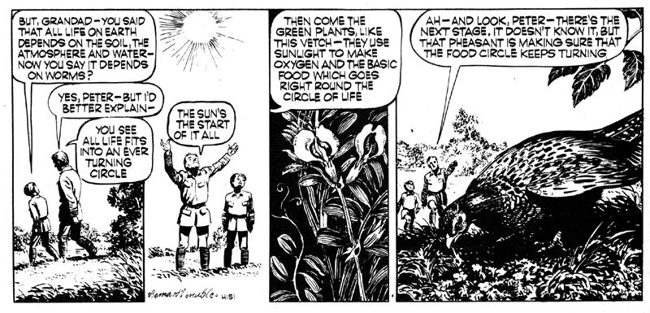

MAN-MADE ROT IS EATING AT THE HEART Of NATURE. WE ARE DESPOILING the HERITAGE OF OUR SONS. OUR, GRANDSONS, AND THEIR GRANDSONS.
And now-direct from England-the world's most conscientious ecology cartoon feature. A little overstated for our American tastes, perhaps, but full of real meat, nonetheless. Ah if we only had a cartoon series like this on our side of the pond! But, since we don't MOTHER presents Mr. Crabtree Crusades!
Worms, like us, live by eating. They eat the organisms that, having lived, come full circle 'back to the earth. The leaf buds and burgeons and then falls and rots to make food for the worm. It passes through the worm and emerges as humus which is food for the soil's fertility. If what is taken from the earth, plants, dung, bodies of dead creatures, is returned as stuff for worms and bacteria, worms can prosper and, therefore, so can we. But modern farming has bypassed nature's process. It has sought to be superior to the organic process of nature, substituting lifeless chemicals, and bludgeoning the delicate balance of life with the blunt instrument of other chemicals. That has done enormous injury to worms and, of course, indirectly, has put us in peril.
Energy comes from the sun to start rolling the cycle of life on earth, and its first agent is chlorophyll. Chlorophyll is what makes green plants green. Using the sun's energy as fuel, it takes carbon dioxide from the air and, with water from the soil, it makes glucose-and that is the basis for the feeding and energy of all that lives. It is also the basic building material from which the body tissues of all creatures are made, including ours. The plants do that too, using glucose to make the protein from which their cells are made. The green plants also make the oxygen upon which all life depends. Animals feeding upon the plants, in their turn, receive the food, and therefore energy, made by the plants by means of the sun's rays. Green plants are the sun's agent on earth.
|
 |
|
|